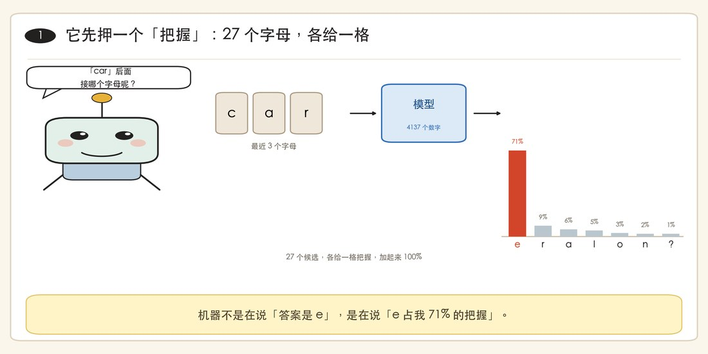
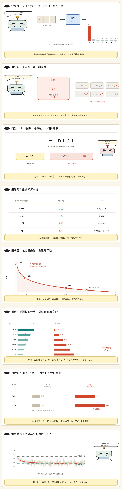
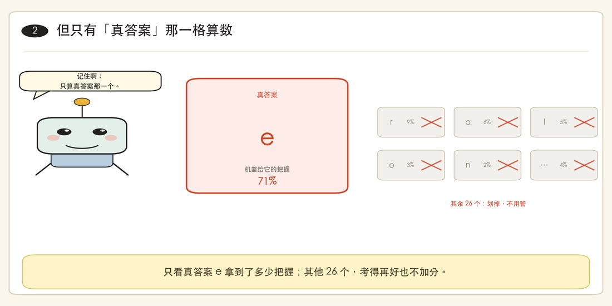
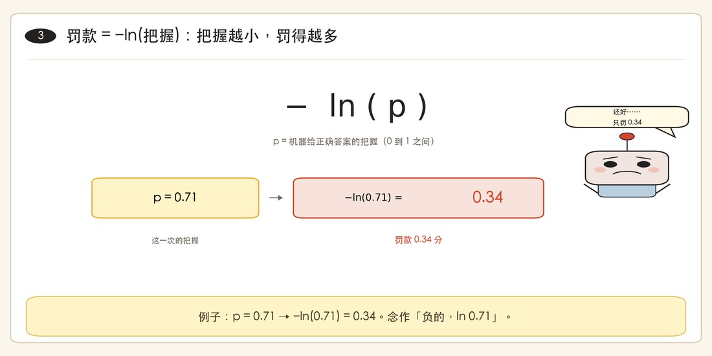
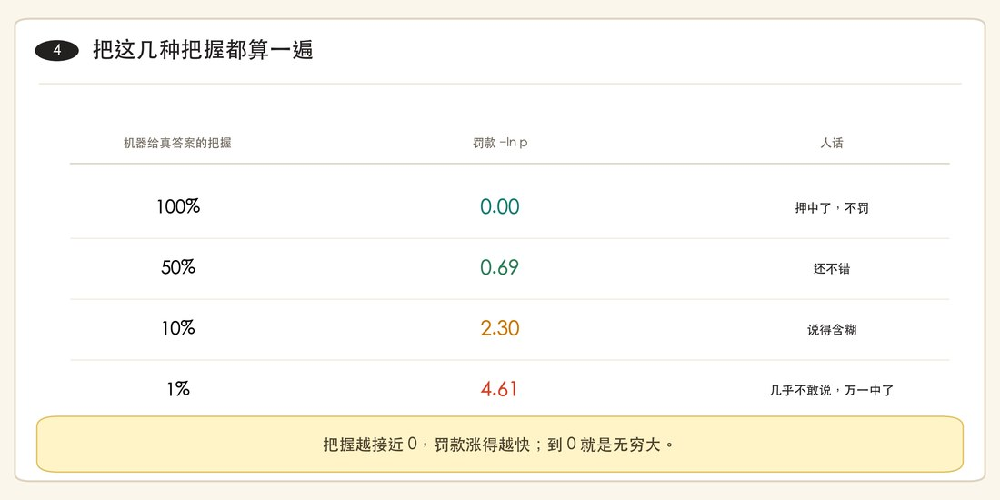
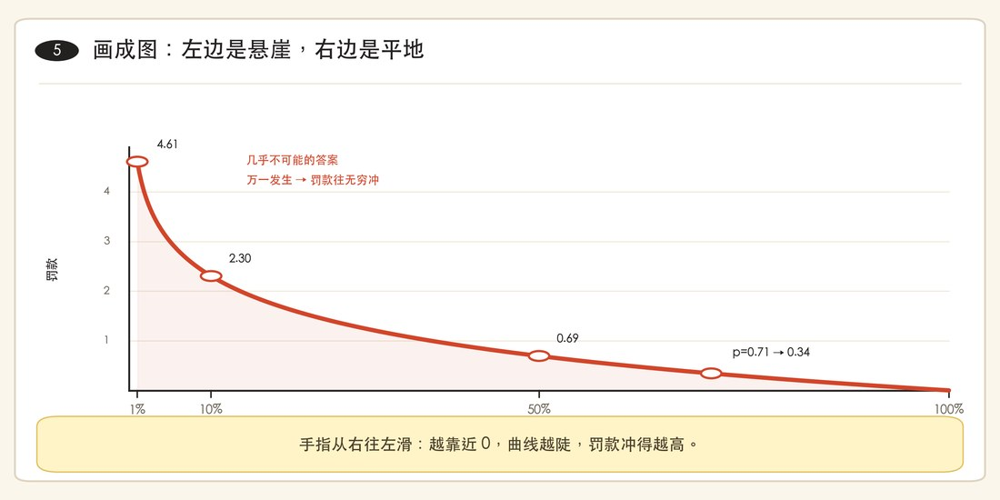
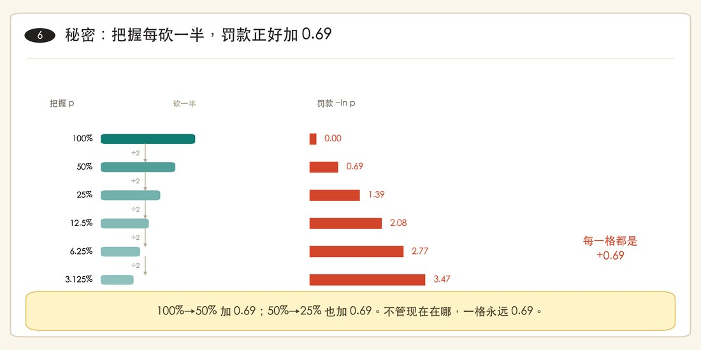
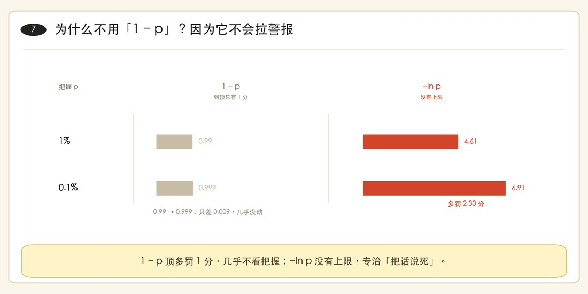
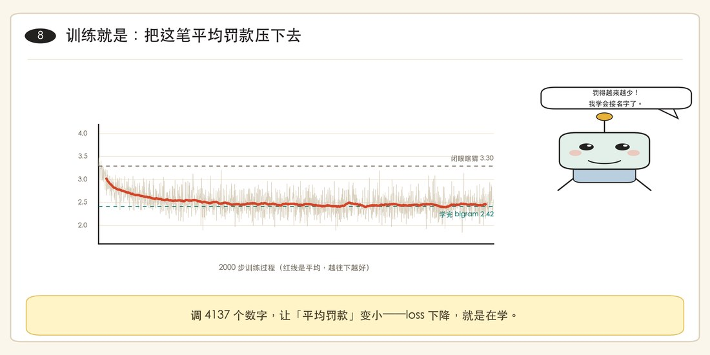

一句话的事 · 看漫画就懂
机器答错了，
到底罚它多少钱？
罚多少钱，只看一个数：它给「正确答案」留了多少把握。 留得多，罚得少；留得少，罚得狠。这个罚款，就叫 −ln p。

主角是这台小机器人。它每读三个字母，就要押一次「下一个是谁」——押完，老师按它的把握收罚款。
记住这三句，别的都可以忘
- 机器对 27 个字母各说一个把握，加起来 100%。
- 答案揭晓后，只看真答案那一格：它拿了 p，罚款 = −ln p。
- 把握每砍一半，罚款就加 0.69。训练就是让这个罚款变小。
一句话：罚的不是「错」，是「错得有多自信」。
01八格漫画，从头讲到尾
一格讲一句话。八格就是整条逻辑链，从上往下（或从左到右）读完就懂了。








图里那个「car → e」是真实例子：模型读过 32033 个名字，看到 car 之后，它给 e 打了 71% 的把握。
02自己拖一下：把握越小，罚得多狠
拖动滑块，改「机器给真答案的把握」。看右边的罚款怎么变——注意左边那一段，涨得特别快。
读图法：横轴找到这次真答案拿到的把握，竖直向上碰到红线，读高度。 左边陡、右边平——「从 10% 掉到 1%」比「从 90% 掉到 80%」贵得多。
03为什么偏偏是 ln？
因为 ln 有一条很朴素的性格：按倍率算账，不按差数算账。把握这东西，本来就该按倍率比。
砍一半，加 0.69 —— 在哪都一样
100% → 50%，加 0.69；50% → 25%，还是加 0.69；1% → 0.5%，依然加 0.69。
信心减半，代价相同。换成 log₂，这一格就是 1 bit。
把握越接近 0，罚得越没有上限
机器说「这绝不可能」，结果真发生了——罚款趋于无穷。
所以它很快学会：别把话说死。代码里要先加一点平滑，否则 −ln 0 会变成无穷大。
「1%」和「0.1%」在 1−p 眼里只差 0.009，几乎看不出区别；在 −ln p 眼里差 2.30 分。 这才是「几乎不敢说」该有的分量。
04三个小问题，测一下懂没懂
先自己答，再点开看。
机器给真答案 50% 的把握，罚款是多少？
0.69 分。因为 −ln(0.5) = 0.69。记法：砍一半，加 0.69。
它给真答案 100% 的把握，罚款是多少？
0 分。−ln(1) = 0。「我确信的事真的发生了」，没有任何意外，所以不罚。
它给别的 26 个字母都打了 0 分，真答案只给 1%，罚多少？
4.61 分。别的字母打成什么样完全不影响——只看真答案那一格。这就是 NLL 最反直觉的地方。
一页速记
忘了就回来扫一眼这四行
- ▸罚款 = −ln(机器给正确答案的把握)
- ▸把握减半 → 罚款 +0.69（换成 log₂ 就是 +1 bit）
- ▸单题罚款 = NLL；一批题取平均 = loss
- ▸训练 = 让这个平均罚款变小